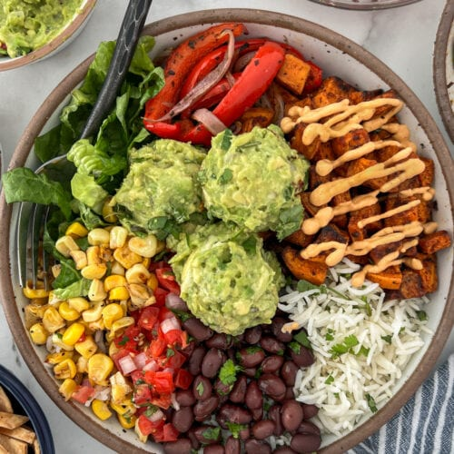

2. Veggie Supreme Whole Wheat Pizza
| Servings | Prep Time | Cook Time |
|---|---|---|
| 2–3 | 15 mins | 20 mins |
Ingredients:
- 1 whole wheat pizza base (store-bought or homemade)
- ½ cup tomato sauce (low-salt, homemade or store-bought)
- 1 cup shredded mozzarella or vegan cheese
- 1 small onion, thinly sliced
- ½ cup bell peppers, thinly sliced
- ½ cup mushrooms, sliced
- ½ cup cherry tomatoes, halved
- 1 tsp olive oil
- ½ tsp dried oregano
- ½ tsp chili flakes (optional)
- Fresh basil leaves for garnish
Instructions:
- Preheat oven to 425°F (220°C).
- Spread tomato sauce evenly over the whole wheat pizza base.
- Sprinkle shredded cheese over the sauce.
- Arrange onion, bell peppers, mushrooms, and cherry tomatoes on top. Drizzle lightly with olive oil.
- Sprinkle oregano and chili flakes over the vegetables.
- Bake in the preheated oven for 15–20 minutes, or until the cheese melts and the crust is golden brown.
- Garnish with fresh basil leaves before serving.
Tip: For extra flavor, roast the vegetables lightly before adding them to the pizza.